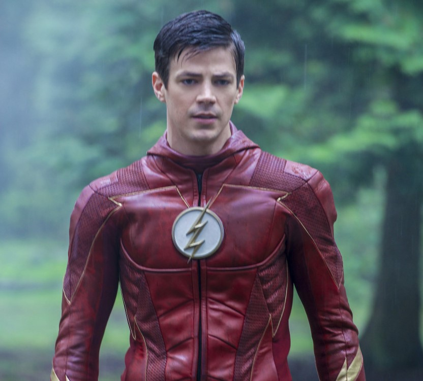
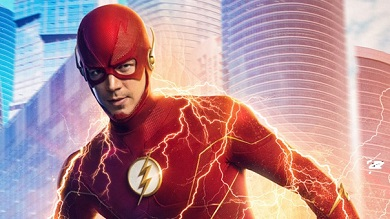

This Is The Flash website
this is the website that shows the story of the flash

The Flash story
this is the site that shows how the flash became a hero of central city
In January 2015, The CW president Mark Pedowitz announced the intention to do a Flash/Arrow crossover every season,[183]
and The CW announced that an animated web-series, Vixen, featuring the DC heroine of the same name and set in the
universe of Arrow and The Flash, would be debuting on CW Seed in late 2015.[184] The character is expected to make a
live-action appearance on Arrow and/or The Flash as well.[185] The next month, it was reported that a spin-off series,
which is described as a superhero team-up show, was in discussion by The CW for a possible 2015–16 midseason release.
Berlanti and Kreisberg would executive produce alongside Guggenheim and Sarah Schechter. The potential series would be
headlined by several recurring characters from both Arrow and The Flash, with the potential for other Arrow/Flash
characters to cross over to the new series as well.[186][187] In May 2015, The CW officially picked up the series,
titled DC's Legends of Tomorrow.[188]
second season begins to explore the concept of the multiverse, by introducing Earth-2, which features doppelgängers
of the inhabitants of Earth-1 (the main setting of Arrow, The Flash and Legends of Tomorrow) along with Jay Garrick, the
Flash of Earth-2, and Zoom. [189] In the episode "Welcome to Earth-2", as Barry, Cisco and Harrison Wells of Earth-2
travel to Earth-2, glimpses of the multiverse are seen, including an image of Supergirl star Melissa Benoist as
Supergirl and an image of John Wesley Shipp as the Flash from the 1990 television series, implying the two characters
and their respective television series exist on alternate Earths to Earth-1;[190][191] Supergirl's world is later
designated Earth-38 in the Arrowverse multiverse.[192] Gustin as Barry appeared on the eighteenth episode of Supergirl,
"Worlds Finest", which aired on CBS on March 28, 2016. Intersecting with the events of the eighteenth episode of The
Flash, which aired on April 19, 2016, Barry accidentally arrives on Earth-38 and helps Kara battle two of her enemies,
Silver Banshee (Italia Ricci) and Livewire (Brit Morgan), before returning home.
In January 2015, The CW president Mark Pedowitz announced the intention to do a Flash/Arrow crossover
every season,[183]
and The CW announced that an animated web-series, Vixen, featuring the DC heroine of the same name and set in the
universe of Arrow and The Flash, would be debuting on CW Seed in late 2015.[184] The character is expected to make a
live-action appearance on Arrow and/or The Flash as well.[185] The next month, it was reported that a spin-off
series,
which is described as a superhero team-up show, was in discussion by The CW for a possible 2015–16 midseason
release.
Berlanti and Kreisberg would executive produce alongside Guggenheim and Sarah Schechter. The potential series would
be
headlined by several recurring characters from both Arrow and The Flash, with the potential for other Arrow/Flash
characters to cross over to the new series as well.[186][187] In May 2015, The CW officially picked up the series,
titled DC's Legends of Tomorrow.[188]
The second season begins to explore the concept of the multiverse, by introducing Earth-2, which features
doppelgängers
of the inhabitants of Earth-1 (the main setting of Arrow, The Flash and Legends of Tomorrow) along with Jay Garrick,
the
Flash of Earth-2, and Zoom.[189] In the episode "Welcome to Earth-2", as Barry, Cisco and Harrison Wells of Earth-2
travel to Earth-2, glimpses of the multiverse are seen, including an image of Supergirl star Melissa Benoist as
Supergirl and an image of John Wesley Shipp as the Flash from the 1990 television series, implying the two
characters
and their respective television series exist on alternate Earths to Earth-1;[190][191] Supergirl's world is later
designated Earth-38 in the Arrowverse multiverse.[192] Gustin as Barry appeared on the eighteenth episode of
Supergirl,
"Worlds Finest", which aired on CBS on March 28, 2016. Intersecting with the events of the eighteenth episode of The
Flash, which aired on April 19, 2016, Barry accidentally arrives on Earth-38 and helps Kara battle two of her
enemies,
Silver Banshee (Italia Ricci) and Livewire (Brit Morgan), before returning home.
oxytofex is the king
Click here to know about the hero of Starcity
The Arrow website

After a particle accelerator causes a freak storm, CSI Investigator Barry Allen is struck by lightning and falls into a
coma. Months later he awakens with the power of super speed, granting him the ability to move through Central City like
an unseen guardian angel. Though initially excited by his newfound powers, Barry is shocked to discover he is not the
only "meta-human" who was created in the wake of the accelerator explosion -- and not everyone is using their new powers
for good. Barry partners with S.T.A.R. Labs and dedicates his life to protect the innocent. For now, only a few close
friends and associates know that Barry is literally the fastest man alive, but it won't be long before the world learns
what Barry Allen has become...The Flash. Barry Allen is a forensic scientist and crime scene investigator at The Central City Police Department with a reasonable
happy life, despite the childhood trauma of a man in a red and yellow bizarre killing his mother and framing his father
for it. All that changes when a massive particle accelerator created by visionary physicist Dr. Harrison Wells and his
team at S.T.A.R Labs causes a malfunction creating a freak storm, killing many people and Barry being struck by
lightning in his lab. He wakes up after a coma nine months later. He and his new friends at S.T.A.R Labs discover that
he has superhuman speed and can run on both land and water. He can move, think and react at light speeds. He can also
vibrate so fast that he can pass through walls, travel through time and lend or borrow speed. He heals more quickly than
an average human.